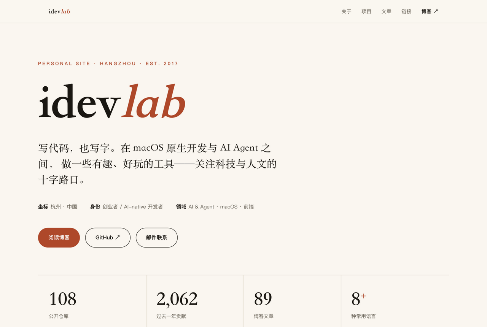
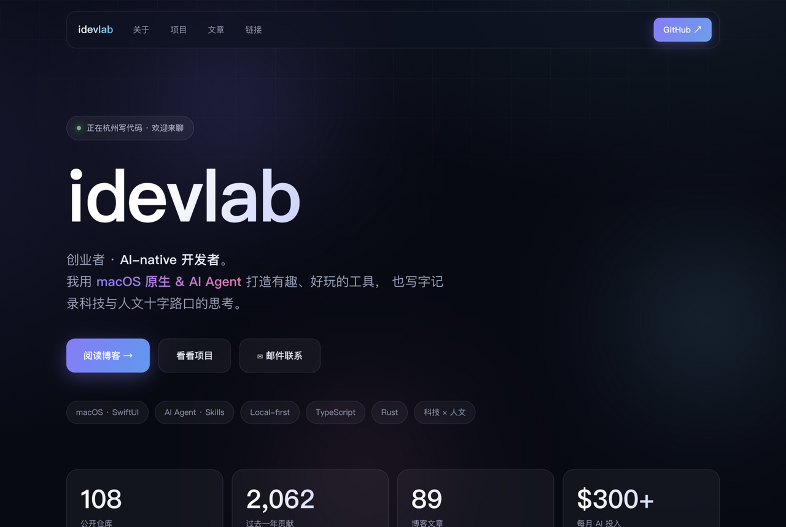
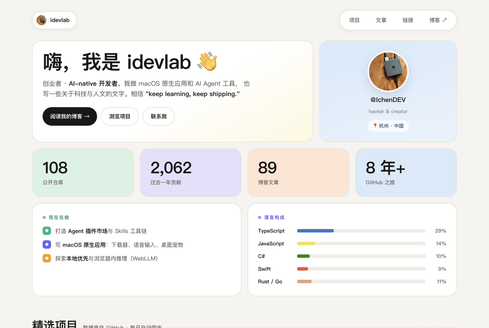
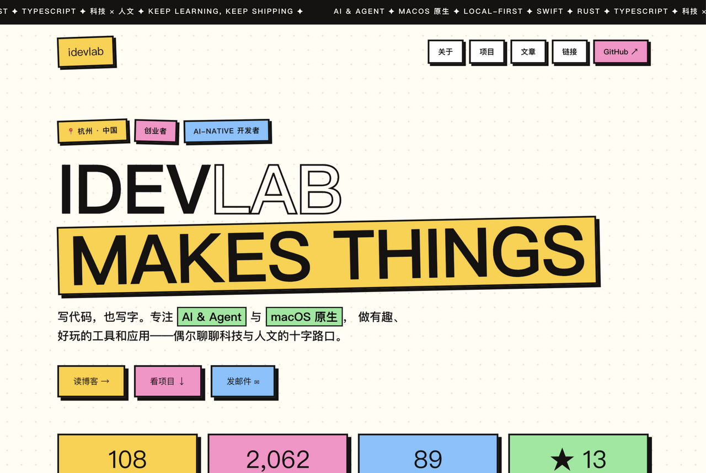

$ ls designs/ — 官网改版提案
每一版都是完整可交互的页面，用你的真实 GitHub 数据填充（项目、文章、统计都一样，方便公平比较）。 缩略图只是入口，点「打开整页」看真实效果。选好方向后，我会把它接入现有的数据管道和部署流程。

纸质暖白 + 衬线大标题 + 朱红点缀，像一本个人刊物。编号章节、索引式项目列表、首字下沉。气质沉稳耐看，适合「写作的人」。

深空底色上飘着极光色块，磨砂玻璃卡片、渐变标题、悬浮光泽。现代、有科技感又不冷漠，保留了现在站点的深色基因但友好得多。

奶油底色 + 彩色圆角卡片拼成一块便当盒，头像、数据、「现在在做」、项目、文章各占一格。信息密度高但一目了然，最「好接近」的一版。

粗黑描边、硬投影、高饱和撞色贴纸，加上滚动跑马灯。大胆、好玩、过目不忘，个性最强的一版——喜欢或讨厌，不会没印象。
当前线上版本（终端风）仍在 www.idevlab.dev，仓库里的原版页面未做任何改动。